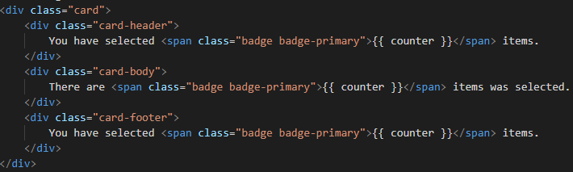
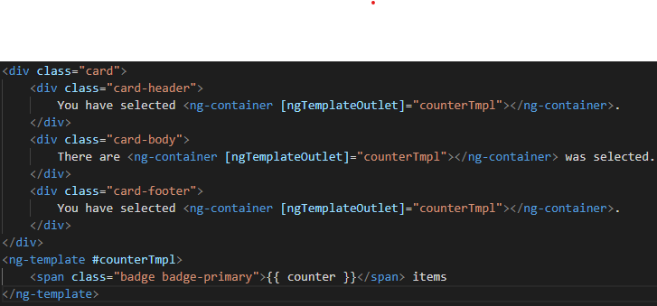

1: Lý thuyết:
- Khi code HTML dc bao quanh bởi ng-template, phần HTML đó sẽ không dc render lên UI ngay lập tức. Mà chỉ dc
render trong một số trường hợp, ví dụ như khi *ngIf else tmpl hoặc thông qua ngTemplateOutlet mà chúng ta sẽ đề cập
đến ở phần sau của bài viết.
- Template hiểu nôm na là mẫu Khi nào cần dùng ng-template
- Dùng kết hợp với các Structure Directive của Angular, ví dụ như *ngIf
- Khi một số UI element trong một component bị lặp lại trong chính component đó, nhưng phần code đó quá nhỏ
để tách ra làm một component riêng Ưu điểm
- Với thành phần trùng lặp: Thay vì phải sửa ở 3 nơi, bây giờ ta chỉ cần sửa ở một vị trí đó là ng-template,
Tránh những lỗi typo hay find and replace bị thiếu
- ng-template chỉ gói gọn một số dòng code nên dùng ng-template tiện hơn là tách ra một component mới.
2: Coding vấn đề

You have selected {{ counter }} items.
There are {{ counter }} items was selected.
3: Coding dùng ng-template khi cấu trúc của item hiển thị trùng nhau về thẻ, tất cả item trùng sẽ gọi vào template

You have selected .
There are was selected.
{{ counter }} items
3: Dùng ng-template để pass vào component khác. Hỗ trợ override template có sẵn trong component.